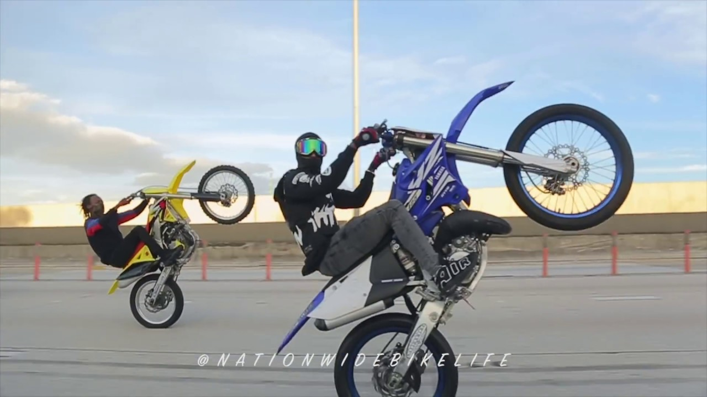

el stunt es un deporte de motocicleta caracterizado por acrobacias que involucran maniobras acrobáticas de la motocicleta y, a veces, del conductor. Maniobras comunes en acrobacias incluyen caballitos , stoppies y quemados . Las bicicletas deportivas se han convertido en un vehículo común para las acrobacias. y el Stunt Riding no es la excepción.El arte de hacer caballitos, invertidos y acrobacias varias ha pasado de ser una práctica proscrita y mal vista por la sociedad a convertirse en una disciplina regulada y en la que se compite a nivel internacional.
A pesar de no estar reconocida por la FIM (Federación Internacional de Motociclismo), se disputan anualmente y desde hace casi dos décadas campeonatos de Europa y del Mundo de Stunt Riding, donde los mejores especialistas del mundo demuestras sus habilidades sobre dos ruedas. Es curioso que ese organismo no lo reconozca como deporte ya que sí lo ha hecho con el FMX Freestyle.